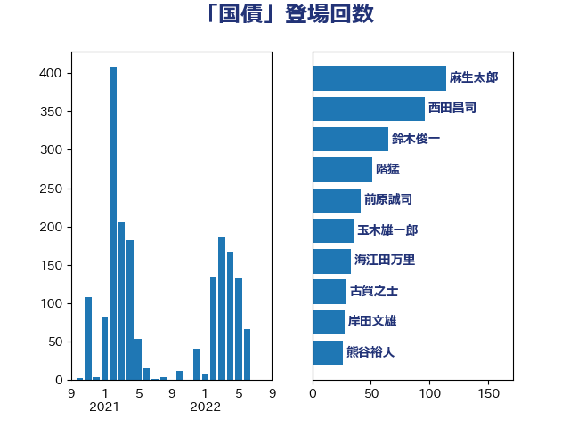

単語「国債」

| 麻生太郎 | 自由民主党 | 114 回 |
| 西田昌司 | 自由民主党 | 96 回 |
| 鈴木俊一 | 自由民主党 | 65 回 |
| 階猛 | 立憲民主党 | 51 回 |
| 前原誠司 | 国民民主党 | 41 回 |
| 玉木雄一郎 | 国民民主党 | 35 回 |
| 海江田万里 | 立憲民主党 | 33 回 |
| 古賀之士 | 立憲民主党 | 29 回 |
| 岸田文雄 | 自由民主党 | 28 回 |
| 熊谷裕人 | 立憲民主党 | 26 回 |
| 伊藤渉 | 公明党 | 22 回 |
| 櫻井周 | 立憲民主党 | 19 回 |
| 大塚耕平 | 国民民主党 | 18 回 |
| 藤巻健太 | 日本維新の会 | 17 回 |
| 櫛渕万里 | れいわ新選組 | 14 回 |
| 伊藤孝恵 | 国民民主党 | 13 回 |
| 中川正春 | 立憲民主党 | 12 回 |
| 牧山ひろえ | 立憲民主党 | 12 回 |
| 山口壯 | 自由民主党 | 11 回 |
| 浅田均 | 日本維新の会 | 11 回 |
| 野田佳彦 | 立憲民主党 | 11 回 |
| 末松信介 | 自由民主党 | 10 回 |
| 矢倉克夫 | 公明党 | 10 回 |
| 礒崎哲史 | 国民民主党 | 10 回 |
| 加藤鮎子 | 自由民主党 | 9 回 |
| 本田太郎 | 自由民主党 | 9 回 |
| 江田憲司 | 立憲民主党 | 9 回 |
| 菅義偉 | 自由民主党 | 9 回 |
| 船橋利実 | 自由民主党 | 8 回 |
| 吉田統彦 | 立憲民主党 | 6 回 |
| 福田昭夫 | 立憲民主党 | 6 回 |
| 赤木正幸 | 日本維新の会 | 6 回 |
| 近藤和也 | 立憲民主党 | 6 回 |
| 北村経夫 | 自由民主党 | 5 回 |
| 古賀友一郎 | 自由民主党 | 5 回 |
| 大家敏志 | 自由民主党 | 5 回 |
| 田村憲久 | 自由民主党 | 5 回 |
| たがや亮 | れいわ新選組 | 4 回 |
| 宗清皇一 | 自由民主党 | 4 回 |
| 小野泰輔 | 日本維新の会 | 4 回 |
| 後藤茂之 | 自由民主党 | 4 回 |
| 浅野哲 | 国民民主党 | 4 回 |
| 蓮舫 | 立憲民主党 | 4 回 |
| 西岡秀子 | 国民民主党 | 4 回 |
| 音喜多駿 | 日本維新の会 | 4 回 |
| 上田清司 | 国民民主党 | 3 回 |
| 中川宏昌 | 公明党 | 3 回 |
| 山田賢司 | 自由民主党 | 3 回 |
| 末松義規 | 立憲民主党 | 3 回 |
| 沢田良 | 日本維新の会 | 3 回 |
| 浜口誠 | 国民民主党 | 3 回 |
| 福島伸享 | 無所属 | 3 回 |
| 笠井亮 | 日本共産党 | 3 回 |
| 菅直人 | 立憲民主党 | 3 回 |
| 長妻昭 | 立憲民主党 | 3 回 |
| 青木愛 | 立憲民主党 | 3 回 |
| 世耕弘成 | 自由民主党 | 2 回 |
| 中村裕之 | 自由民主党 | 2 回 |
| 中西祐介 | 自由民主党 | 2 回 |
| 加藤勝信 | 自由民主党 | 2 回 |
| 古川元久 | 国民民主党 | 2 回 |
| 小田原潔 | 自由民主党 | 2 回 |
| 岩渕友 | 日本共産党 | 2 回 |
| 柴田巧 | 日本維新の会 | 2 回 |
| 根本匠 | 自由民主党 | 2 回 |
| 梅村みずほ | 日本維新の会 | 2 回 |
| 橋本岳 | 自由民主党 | 2 回 |
| 泉田裕彦 | 自由民主党 | 2 回 |
| 津島淳 | 自由民主党 | 2 回 |
| 熊田裕通 | 自由民主党 | 2 回 |
| 片山さつき | 自由民主党 | 2 回 |
| 玄葉光一郎 | 立憲民主党 | 2 回 |
| 田村貴昭 | 日本共産党 | 2 回 |
| 舞立昇治 | 自由民主党 | 2 回 |
| 舩後靖彦 | れいわ新選組 | 2 回 |
| 若林健太 | 自由民主党 | 2 回 |
| 落合貴之 | 立憲民主党 | 2 回 |
| 越智隆雄 | 自由民主党 | 2 回 |
| 三宅伸吾 | 自由民主党 | 1 回 |
| 中西健治 | 自由民主党 | 1 回 |
| 加田裕之 | 自由民主党 | 1 回 |
| 坂本哲志 | 自由民主党 | 1 回 |
| 城井崇 | 立憲民主党 | 1 回 |
| 塩川鉄也 | 日本共産党 | 1 回 |
| 大島敦 | 立憲民主党 | 1 回 |
| 大石あきこ | れいわ新選組 | 1 回 |
| 太田房江 | 自由民主党 | 1 回 |
| 奥野総一郎 | 立憲民主党 | 1 回 |
| 小泉進次郎 | 自由民主党 | 1 回 |
| 岡本あき子 | 立憲民主党 | 1 回 |
| 岡本三成 | 公明党 | 1 回 |
| 早稲田ゆき | 立憲民主党 | 1 回 |
| 杉久武 | 公明党 | 1 回 |
| 梅谷守 | 立憲民主党 | 1 回 |
| 横山信一 | 公明党 | 1 回 |
| 武村展英 | 自由民主党 | 1 回 |
| 江島潔 | 自由民主党 | 1 回 |
| 田畑裕明 | 自由民主党 | 1 回 |
| 石井啓一 | 公明党 | 1 回 |
| 石井章 | 日本維新の会 | 1 回 |
| 笠浩史 | 無所属 | 1 回 |
| 緒方林太郎 | 無所属 | 1 回 |
| 萩生田光一 | 自由民主党 | 1 回 |
| 藤丸敏 | 自由民主党 | 1 回 |
| 足立康史 | 日本維新の会 | 1 回 |
| 足立敏之 | 自由民主党 | 1 回 |
| 野上浩太郎 | 自由民主党 | 1 回 |
| 金田勝年 | 自由民主党 | 1 回 |
| 鈴木隼人 | 自由民主党 | 1 回 |
| 高市早苗 | 自由民主党 | 1 回 |
| 高木啓 | 自由民主党 | 1 回 |